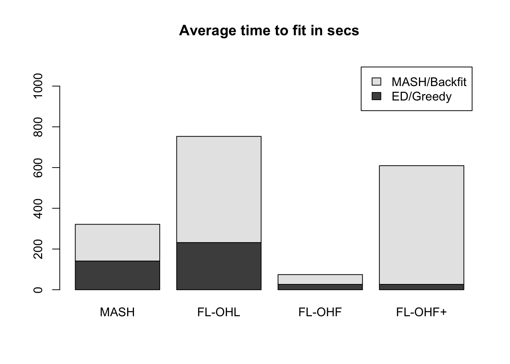

Last updated: 2018-06-24
workflowr checks: (Click a bullet for more information) ✔ R Markdown file: up-to-date
Great! Since the R Markdown file has been committed to the Git repository, you know the exact version of the code that produced these results.
✔ Environment: empty
Great job! The global environment was empty. Objects defined in the global environment can affect the analysis in your R Markdown file in unknown ways. For reproduciblity it’s best to always run the code in an empty environment.
✔ Seed:
set.seed(20180609)
The command set.seed(20180609) was run prior to running the code in the R Markdown file. Setting a seed ensures that any results that rely on randomness, e.g. subsampling or permutations, are reproducible.
✔ Session information: recorded
Great job! Recording the operating system, R version, and package versions is critical for reproducibility.
✔ Repository version: 42cd89c
wflow_publish or wflow_git_commit). workflowr only checks the R Markdown file, but you know if there are other scripts or data files that it depends on. Below is the status of the Git repository when the results were generated:
Ignored files:
Ignored: .DS_Store
Ignored: .Rhistory
Ignored: .Rproj.user/
Ignored: docs/.DS_Store
Ignored: docs/images/.DS_Store
Ignored: output/.DS_Store
Untracked files:
Untracked: output/sims2.rds
Unstaged changes:
Modified: code/sims2.R
| File | Version | Author | Date | Message |
|---|---|---|---|---|
| Rmd | 42cd89c | Jason Willwerscheid | 2018-06-24 | wflow_publish(c(“analysis/MASHvFLASHsims2.Rmd”, |
| html | 0397c51 | Jason Willwerscheid | 2018-06-21 | Build site. |
| Rmd | aeaca04 | Jason Willwerscheid | 2018-06-21 | wflow_publish(“analysis/MASHvFLASHgtex.Rmd”) |
| html | c599bfa | Jason Willwerscheid | 2018-06-20 | Build site. |
| Rmd | 122f83a | Jason Willwerscheid | 2018-06-20 | wflow_publish(“analysis/MASHvFLASHgtex.Rmd”) |
| html | b1ff37c | Jason Willwerscheid | 2018-06-16 | Build site. |
| Rmd | eac4059 | Jason Willwerscheid | 2018-06-16 | wflow_publish(“analysis/MASHvFLASHgtex.Rmd”) |
| html | 0aa5cc6 | Jason Willwerscheid | 2018-06-16 | Build site. |
| Rmd | d8b6331 | Jason Willwerscheid | 2018-06-16 | analysis/index.Rmd |
Here I analyze some GTEx data. The dataset can be found at https://stephenslab.github.io/gtexresults/. I use the “random.z” dataset, which consists of \(z\)-scores for 44 tissues and a random subset of 20000 tests.
I used the same methods to fit the data that I used in my simulation study. These methods assume that noise is independent among conditions. It is not, but it is still useful to see how the methods compare when applied to a real dataset.
The simulation study suggested that the “one-hots last” method typically produces a better fit than the “one-hots first” method, even though it can take quite a bit longer. Here I enter into some more detail.
First I load the data and the fits.
gtex <- readRDS(gzcon(url("https://github.com/stephenslab/gtexresults/blob/master/data/MatrixEQTLSumStats.Portable.Z.rds?raw=TRUE")))
data <- gtex$random.z
data <- t(data)
fl_data <- flash_set_data(data, S = 1)
gtex_mfit <- readRDS("./output/gtexmfit.rds")
gtex_flfit <- readRDS("./output/gtexflfit.rds")The OHL fit was produced by greedily adding a total of 17 factors, then adding 44 fixed one-hot factors (one per condition), then backfitting the whole thing. The objective attained was -1277145.
The OHF fit added the 44 fixed one-hot factors, then backfit them, then added only 4 (!) more factors greedily. The resulting objective was much worse than that of the OHL fit, at -1315285.
Finally, I tried applying an additional backfitting step to the OHF fit to see how much the objective improved (I call this method “FLASH-OHF+” in the simulation study). The final objective was -1278991: better, but still not as good as the OHL fit.
It seems clear that the OHL method is the way to go. However, it does take a long time (over twice as long as MASH):
data <- c(gtex_mfit$timing$ed, gtex_mfit$timing$mash,
gtex_flfit$timing$OHL$greedy, gtex_flfit$timing$OHL$backfit,
gtex_flfit$timing$OHF$greedy, gtex_flfit$timing$OHF$backfit,
gtex_flfit$timing$OHFp$greedy, gtex_flfit$timing$OHFp$backfit)
time_units <- units(data)
data <- matrix(as.numeric(data), 2, 4)
barplot(data, axes=T,
main=paste("Average time to fit in", time_units),
names.arg = c("MASH", "FL-OHL", "FL-OHF", "FL-OHF+"),
legend.text = c("ED/Greedy", "MASH/Backfit"),
ylim = c(0, max(colSums(data))*1.5))
The posterior means are quite similar (correlation coefficient = 0.95). The dashed line plots \(y = x\):
Next I look at confusion matrices for gene-condition pairs that are declared significant at a given LFSR threshold. As in the simulation study, I used a built-in function to evaluate LFSR for the MASH fit and I sampled from the posterior for the FLASH fit. In general, FLASH appears be more conservative than MASH.
m_lfsr <- t(get_lfsr(gtex_mfit$m))
fl_lfsr <- readRDS("./output/gtexfllfsr.rds")
confusion_matrix <- function(t) {
mash_signif <- m_lfsr <= t
flash_signif <- fl_lfsr <= t
round(table(mash_signif, flash_signif)
/ length(mash_signif), digits=3)
}At 5%:
confusion_matrix(.05) flash_signif
mash_signif FALSE TRUE
FALSE 0.744 0.025
TRUE 0.084 0.147At 1%:
confusion_matrix(.01) flash_signif
mash_signif FALSE TRUE
FALSE 0.862 0.017
TRUE 0.039 0.082Click the “Code” button to view the code used to obtain the above results.
devtools::load_all("/Users/willwerscheid/GitHub/flashr2/")
library(mashr)
gtex <- readRDS(gzcon(url("https://github.com/stephenslab/gtexresults/blob/master/data/MatrixEQTLSumStats.Portable.Z.rds?raw=TRUE")))
data <- gtex$random.z
data <- t(data)
fl_data <- flash_set_data(data, S = 1)
source("./code/fits.R")
source("./code/sims.R")
source("./code/utils.R")
gtex_mfit <- fit_mash(data)
saveRDS(gtex_mfit, "./output/gtexmfit.rds")
gtex_flfit <- fit_flash(data, Kmax = 40, methods=2:5)
saveRDS(gtex_flfit, "./output/gtexflfit.rds")
flash_get_objective(fl_data, gtex_flfit$fits$Zero) # -1277881
flash_get_objective(fl_data, gtex_flfit$fits$OHL) # -1277145
flash_get_objective(fl_data, gtex_flfit$fits$OHF) # -1315285
flash_get_objective(fl_data, gtex_flfit$fits$OHFp) # -1278991
# Use PM from each method as "true Y" and do diagnostics
# fl_pm <- flash_get_lf(gtex_flfit$fl)
# gtex_mres <- mash_diagnostics(gtex_mfit$m, fl_pm)
# saveRDS(gtex_mres, "./output/gtexmres.rds")
#
# m_pm <- t(get_pm(gtex_mfit$m))
# gtex_flres <- flash_diagnostics(gtex_flfit$fl, data, m_pm, nsamp = 200)
# saveRDS(gtex_flres, "./output/gtexflres.rds")
# Plot FLASH PM vs. MASH PM
fl_pm <- flash_get_lf(gtex_flfit$fits$OHL)
m_pm <- t(get_pm(gtex_mfit$m))
png("./output/gtexcompare.png")
plot(as.vector(fl_pm), as.vector(m_pm), xlab="FLASH PM", ylab="MASH PM",
main="Posterior means on GTEx data", pch='.')
abline(0, 1, lty=2)
dev.off()
cor(as.vector(fl_pm), as.vector(m_pm)) # 0.952
# Use LFSR to get "significant" effects and get confusion matrices
m_lfsr <- t(get_lfsr(gtex_mfit$m))
fl_sampler <- flash_lf_sampler(data, gtex_flfit$fits$OHL, ebnm_fn=ebnm_pn, fixed="loadings")
fl_lfsr <- flash_lfsr(fl_sampler(200))
saveRDS(fl_lfsr, "./output/gtexfllfsr.rds")
confusion_matrix <- function(t) {
mash_signif <- m_lfsr <= t
flash_signif <- fl_lfsr <= t
round(table(mash_signif, flash_signif)
/ length(mash_signif), digits=3)
}
confusion_matrix(.05)
confusion_matrix(.01)
confusion_matrix(.001)sessionInfo()R version 3.4.3 (2017-11-30)
Platform: x86_64-apple-darwin15.6.0 (64-bit)
Running under: macOS Sierra 10.12.6
Matrix products: default
BLAS: /Library/Frameworks/R.framework/Versions/3.4/Resources/lib/libRblas.0.dylib
LAPACK: /Library/Frameworks/R.framework/Versions/3.4/Resources/lib/libRlapack.dylib
locale:
[1] en_US.UTF-8/en_US.UTF-8/en_US.UTF-8/C/en_US.UTF-8/en_US.UTF-8
attached base packages:
[1] stats graphics grDevices utils datasets methods base
other attached packages:
[1] mashr_0.2-7 ashr_2.2-7 flashr_0.5-8
loaded via a namespace (and not attached):
[1] Rcpp_0.12.17 pillar_1.2.1 plyr_1.8.4
[4] compiler_3.4.3 git2r_0.21.0 workflowr_1.0.1
[7] R.methodsS3_1.7.1 R.utils_2.6.0 iterators_1.0.9
[10] tools_3.4.3 testthat_2.0.0 digest_0.6.15
[13] tibble_1.4.2 evaluate_0.10.1 memoise_1.1.0
[16] gtable_0.2.0 lattice_0.20-35 rlang_0.2.0
[19] Matrix_1.2-12 foreach_1.4.4 commonmark_1.4
[22] yaml_2.1.17 parallel_3.4.3 mvtnorm_1.0-7
[25] ebnm_0.1-11 withr_2.1.1.9000 stringr_1.3.0
[28] roxygen2_6.0.1.9000 xml2_1.2.0 knitr_1.20
[31] devtools_1.13.4 rprojroot_1.3-2 grid_3.4.3
[34] R6_2.2.2 rmarkdown_1.8 rmeta_3.0
[37] ggplot2_2.2.1 magrittr_1.5 whisker_0.3-2
[40] backports_1.1.2 scales_0.5.0 codetools_0.2-15
[43] htmltools_0.3.6 MASS_7.3-48 assertthat_0.2.0
[46] softImpute_1.4 colorspace_1.3-2 stringi_1.1.6
[49] lazyeval_0.2.1 munsell_0.4.3 doParallel_1.0.11
[52] pscl_1.5.2 truncnorm_1.0-8 SQUAREM_2017.10-1
[55] R.oo_1.21.0 This reproducible R Markdown analysis was created with workflowr 1.0.1